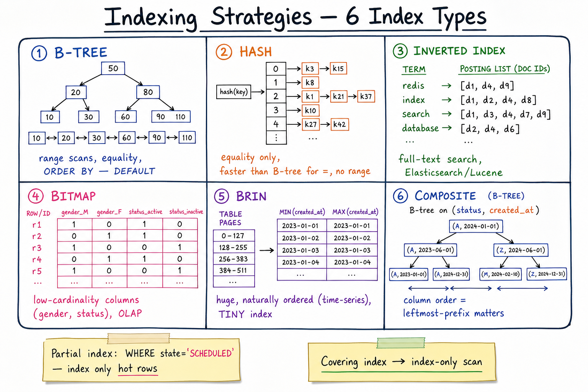

Indexing Strategies // Concept
Indexes trade write cost + storage for read speed. Picking the right type (B-tree, hash, inverted, GIN, GiST, BRIN) is what separates a 10ms query from a 10s query. Knowing when not to index is just as important.

Six index types as visual structures: B-tree (balanced sorted tree), hash (buckets), inverted (term → postings), bitmap (column × row bits), BRIN (per-block min/max), and composite (multi-column B-tree).
01 — What Problem It Solves
FULL SCAN cost on 100M-row table:
SELECT * FROM orders WHERE user_id = 42
→ read all 100M rows. Seconds. Linear with table size.
WITH INDEX on (user_id):
Lookup in B-tree: log(100M) ≈ 27 comparisons.
Then fetch matching rows by tuple pointer. Milliseconds.
COST:
- Write amplification: every INSERT / UPDATE / DELETE on indexed columns
must update the index.
- Storage: index = ~10-30% of table size.
- Maintenance: index bloat, ANALYZE statistics, REINDEX.
Index = pre-computed sorted/structured copy optimised for a specific access pattern. Pick by access pattern; don't "just add another index."
01a — Core Vocabulary
| Term | Meaning |
|---|---|
| B-tree | Balanced N-ary search tree. The default. Supports equality + range + ORDER BY. |
| Hash index | hash(key) → bucket. O(1) equality, no range. |
| Inverted index | term → list of doc IDs. Powers full-text search (Lucene, Elasticsearch). |
| Bitmap index | One bitmap per distinct value. Great for low-cardinality + OLAP. |
| GIN | Generalized Inverted Index. JSONB, arrays, full-text in Postgres. |
| GiST | Generalized Search Tree. Geometric, spatial, ranges (Postgres). |
| BRIN | Block Range Index. Stores min/max per N-page block. Tiny. |
| Composite | Index on (a, b, c). Useful for queries on leftmost prefix (a) or (a,b). |
| Covering index | Includes all columns needed by the query → index-only scan, no heap fetch. |
| Partial index | Index with a WHERE clause — only the matching rows are indexed. |
| Expression index | Index on f(column) e.g. LOWER(email). |
| Selectivity | Fraction of rows matching. High selectivity = few rows = index useful. |
02 — Index Type Comparison
| Type | Best at | Bad at | Lookup cost |
|---|---|---|---|
| B-tree | = , <, >, BETWEEN, ORDER BY, LIKE 'foo%' | LIKE '%foo', non-prefix | O(log N) |
| Hash | = only | Range, ORDER BY | O(1) avg |
| Inverted | Full-text, "any term in" | Range on values | O(postings) |
| Bitmap | OLAP, low-cardinality, AND/OR of many predicates | OLTP writes (whole bitmap rewrites) | O(N/word) bit ops |
| GIN | JSONB @>, array contains, full-text | Slower writes than B-tree | O(log N) per term |
| GiST | Geo (PostGIS &&, <->), ranges | Plain equality (use B-tree) | O(log N) per region |
| BRIN | Huge naturally-ordered tables (time-series, append-only) | Unordered data | O(blocks_in_range) |
| Composite B-tree | Queries on leftmost prefix; (a)+(a,b)+(a,b,c) | Queries on b only (skips a) | O(log N) |
03 — Diagram
Diagram above shows the visual structure of each: B-tree balanced and sorted leaves linked; hash with bucket chains; inverted with term-to-postings; bitmap as column × row bits; BRIN per-block min/max; composite (a, b) B-tree showing leftmost-prefix behavior.
04 — B-Tree: Why It Dominates
STRUCTURE: balanced N-ary tree, sorted keys per node. Internal nodes: key → child pointer. Leaf nodes: key → tuple pointer; doubly-linked to next leaf. WHY IT'S THE DEFAULT: ✓ Equality lookups: O(log N). ✓ Range scans: walk leaf links left/right. ✓ ORDER BY: leaves already sorted. ✓ LIKE 'foo%': finds first 'foo', scans leaves forward until 'fop'. ✓ Backs both unique constraints and PRIMARY KEY. ✓ Insert/delete: O(log N) with self-rebalancing. WHY HASH IS NICHE: ✗ No range, no ordering. ✗ Postgres hash indexes were not crash-safe pre-10; B-tree was always safer. Use hash only for huge equality-only tables where the constant factor wins. TYPICAL FANOUT: ~200 keys per page (8 KB). → 3 levels covers ~8M keys; 4 levels covers ~1.6B keys.
05 — Hash & Inverted Indexes
Hash
O(1) equality. No range, no ORDER BY. Used internally for in-memory KV stores (Redis), DB hash join temp structures, partition routing.
Inverted index
Document 1: "the quick brown fox"
Document 2: "quick foxes are quick"
INVERTED INDEX:
"the" -> [1]
"quick" -> [1, 2]
"brown" -> [1]
"fox" -> [1]
"foxes" -> [2]
"are" -> [2]
QUERY: "quick fox"
Intersect postings("quick") ∩ postings("fox") = [1].
BUILT-IN AT: Lucene/Elasticsearch (the canonical), Postgres GIN
(general inverted index for tsvector, jsonb, arrays), Redis Search.
See Elasticsearch deep dive for inverted-index internals.
06 — GIN / GiST / BRIN
GIN — "many keys per row"
Use for: JSONB, arrays, tsvector full-text, hstore. Example: CREATE INDEX idx_tags ON posts USING GIN (tags); -- now: SELECT ... WHERE tags @> ARRAY['redis','docker'] is fast. Cost: slower writes (each term updates the index).
GiST — "spatial / range / overlap"
Use for: PostGIS geometry, tsrange/numrange, KNN nearest-neighbour. Example: CREATE INDEX idx_geo ON locations USING GIST (point); -- SELECT ... WHERE point <-> 'POINT(0 0)' < 1000 ORDER BY 1 SP-GIST is a variant for non-balanced trees (quadtrees, KD-trees, suffix tries).
BRIN — "tiny index for huge ordered tables"
Stores min/max of indexed column per N-page block (default 128 pages).
A 1 TB time-series table = a few MB BRIN index.
Use for: append-only naturally-ordered tables.
CREATE INDEX idx_ts ON events USING BRIN (created_at)
WITH (pages_per_range = 128);
-- WHERE created_at > now() - interval '1 hour'
-- BRIN finds the ~3 relevant blocks. Reads only those.
DOWNSIDE: if data is NOT ordered by indexed column, BRIN = useless.
07 — Composite Indexes & Column Order
CREATE INDEX idx_orders ON orders (user_id, status, created_at); SUPPORTS: WHERE user_id = ? ✓ WHERE user_id = ? AND status = ? ✓ WHERE user_id = ? AND status = ? AND created_at > ? ✓ WHERE user_id = ? AND created_at > ? ✓ (skips status partially) DOES NOT SUPPORT (efficiently): WHERE status = ? ✗ WHERE created_at > ? ✗ WHERE status = ? AND created_at > ? ✗ RULE: leftmost-prefix matters.
Column-order heuristic
- Equality columns first, range columns last (so the range can be a tight scan at the end).
- Highest-selectivity equality first (smallest matching set).
- Common pattern for tenanted apps:
(tenant_id, ...)as leftmost. - If you have an index on
(a)and one on(a, b)— drop the smaller one; the bigger covers it.
08 — Covering & Partial Indexes
Covering index (index-only scan)
CREATE INDEX idx_orders_covering ON orders (user_id) INCLUDE (status, total); Query: SELECT status, total FROM orders WHERE user_id = 42; → planner uses the index alone, no heap fetch. 2-10x faster. In Postgres: INCLUDE clause (non-key columns stored in index leaves). In MySQL: just add more columns to the index.
Partial index
CREATE INDEX idx_scheduled ON jobs (next_run_at)
WHERE status = 'SCHEDULED';
If only 1% of jobs are SCHEDULED, the index is 100x smaller than full.
Query: SELECT ... FROM jobs WHERE status='SCHEDULED' AND next_run_at < now()
ORDER BY next_run_at LIMIT 100;
→ planner picks the partial index automatically.
USED BY: job-scheduler: partial index on (next_run_at) WHERE status='SCHEDULED'.
Hot-row mailbox tables: partial index WHERE unread = true.
Expression index
CREATE INDEX idx_email_lower ON users (LOWER(email)); SELECT ... WHERE LOWER(email) = 'foo@bar.com'; → index used. Without it, full scan.
09 — Anti-Patterns & Maintenance
- "Index everything." Each index adds 10-30% per-row write cost. On a write-heavy table this is brutal. Keep N<=5-7 per hot table.
- Indexing low-cardinality columns with B-tree —
gender,status— planner often ignores it; partial index is better. - Functions defeat indexes —
WHERE DATE(created_at) = '2024-...'ignores the index unless you have an expression index onDATE(created_at). - OR can defeat indexes —
WHERE a=? OR b=?may seq-scan; use UNION or a multi-column setup. - Index bloat — in MVCC DBs (Postgres), updates produce dead tuples in indexes. Periodic REINDEX or pg_repack.
- Outdated statistics — planner picks bad plan; run ANALYZE / auto-analyze tuning.
- Implicit casts —
WHERE int_col = '42'may cast the column, not the literal → full scan. Use matching types. - Building indexes online — in Postgres use
CREATE INDEX CONCURRENTLYto avoid AccessExclusive lock.
EXPLAIN ANALYZE is your friend. If you don't see "Index Scan" or "Index Only Scan" in the query plan for an indexed column, the index isn't being used — figure out why before adding more.
N-2 — Where It Shows Up
- Postgres deep dive — B-tree internals, GIN, GiST, BRIN, MVCC and index bloat.
- Job scheduler — partial index on
next_run_atWHERE status='SCHEDULED'. - Proximity service — spatial (GiST / SP-GiST) for "nearby restaurants."
- Search autocomplete — trie + inverted index.
- Twitter — covering index on tweet timelines.
- Ad click aggregator — BRIN on time-series ingest table.
- Elasticsearch — the inverted-index canonical.
- SQL vs NoSQL — NoSQL secondary indexes are often weaker (GSI eventual in DynamoDB).
- Sharding — global vs local index trade-offs.
N-1 — Common Interview Probes
- "What index would you put on this query?" → B-tree on (predicate columns + ordering) leftmost.
- "Why is this query slow?" → EXPLAIN ANALYZE, look for seq-scan.
- "How would you handle JSON queries?" → GIN on JSONB.
- "Time-series table is exploding — index strategy?" → BRIN on timestamp + partition by month.
- "Why does adding more indexes slow you down?" → write amplification.
- "What's a covering index?" → index-only scan, all columns in index.
- "How do you build an index without downtime?" → CREATE INDEX CONCURRENTLY.
N — Interview Q&A
Why is B-tree the default?
It handles equality, range, ORDER BY, and prefix LIKE in one structure with O(log N) lookups and self-balancing on insert/delete. Hash is faster for pure equality but loses everything else; inverted needs special operators; bitmap is OLAP-only. B-tree is the 90% answer.
Composite index on (a, b, c) — will WHERE b=? use it?
No (or only via a skip-scan trick on some engines). Composite indexes are leftmost-prefix — you must include a. Column order in a composite index = which queries you accelerate. Put equality columns first, range last.
When is BRIN better than B-tree?
When data is naturally ordered by the indexed column (events table by insert time) and the table is huge (100GB+). BRIN stores min/max per block range — the index is megabytes vs gigabytes. Range queries narrow to a few blocks, then sequential scan within. Useless if data is unordered.
What's a partial index and when would you use one?
Index with a WHERE predicate — only matching rows are indexed. Use when (a) queries always filter by that predicate (WHERE status='SCHEDULED' in a job scheduler), and (b) the predicate selects a small fraction of rows. The index becomes 100x smaller; the planner picks it automatically.
Index-only scan vs index scan vs seq scan?
Seq scan reads the whole table. Index scan walks the index then fetches each matching row from the heap (random I/O). Index-only scan reads the index and skips the heap fetch entirely — only possible when all selected columns are in the index (covering index). 2-10x faster than regular index scan.
How would you index a JSONB column?
GIN on the whole JSONB column (USING GIN (data jsonb_path_ops)) for containment queries (data @> '{"role":"admin"}'). For one specific path, an expression B-tree on (data->>'user_id') is smaller and faster. Match the index to the query shape.
What's "index bloat" and how do you fix it?
In MVCC databases, UPDATEs leave dead index entries pointing to dead heap tuples. Over time the index grows beyond its useful size. Fix: VACUUM reclaims; REINDEX rebuilds; pg_repack rebuilds online. Avoid by tuning autovacuum, using HOT updates (no indexed column change), and partitioning.
Why does WHERE DATE(created_at) = '2024-01-01' sometimes skip the index?
The function DATE() wrapping the column makes the indexed column "not directly compared." Either rewrite as WHERE created_at >= '2024-01-01' AND created_at < '2024-01-02' (uses B-tree on created_at) or create an expression index CREATE INDEX ON t (DATE(created_at)).
Trade-off of adding an index on a hot write column?
Every INSERT/UPDATE/DELETE has to update the index too — usually 5-30% extra write latency and CPU. On a 100k-write/sec hot table this can be the difference between healthy and saturated. Measure before and after, and consider partial / covering alternatives.
How does DynamoDB's GSI differ from a Postgres index?
GSI = Global Secondary Index = a separately-stored, separately-partitioned table maintained asynchronously. Eventually consistent (unlike LSI which is strongly consistent but partition-bound). Has its own throughput capacity. Much more expensive than a Postgres index per write. Pick GSIs carefully and only for the dominant access patterns.
How do you build an index on a 1TB table without downtime?
Postgres: CREATE INDEX CONCURRENTLY — takes longer but doesn't block writes. MySQL: ALGORITHM=INPLACE, LOCK=NONE. Both: do it in a low-traffic window. Plan for ~2-4 hours per 100GB depending on hardware. Monitor disk + WAL.
SDE-2 vs SDE-3 differentiator?
| SDE-2 | SDE-3 |
|---|---|
| Knows B-tree + composite; "add an index" | Picks index type per access pattern; partial + covering + expression indexes; uses GIN/BRIN/GiST appropriately; reasons about column order via selectivity; understands write amplification + index bloat + CONCURRENTLY; uses EXPLAIN ANALYZE to verify plans; knows GSI vs Postgres index trade-offs in DynamoDB |